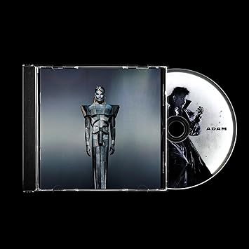
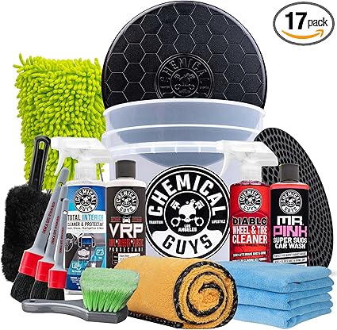
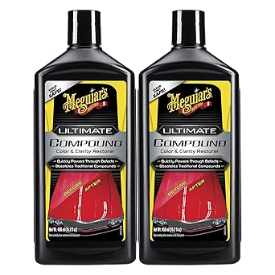
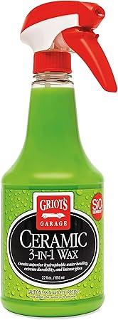
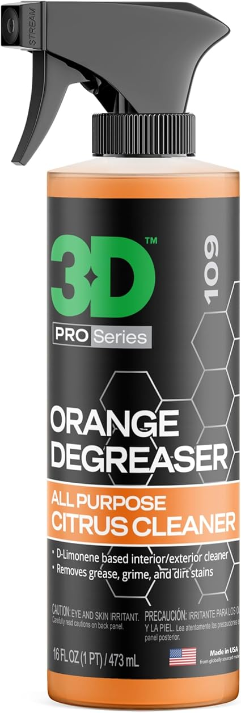

May 2026
Whether you're upgrading or buying your first, the right detailingkit in 2026 comes down to a few factors most buyers overlook.

→ #4 — Chemical Guys Car Cleaning Kit Interior 9-Piece — Fan favorite

→ #3 — Chemical Guys Car Wash & Interior Detailing Kit — Best seller

→ #1 — Chemical Guys 14-Pc Car Wash Kit with Foam Blaster — Fan favorite

→ #2 — Chemical Guys 17-Piece Car Detailing Kit — Highly reviewed

→ #5 — Chemical Guys 10-Piece Arsenal Builder Car Wash Kit — Consistently rated
Panic buying on sale days — Prime Day and Black Friday detailingkit deals aren't always real discounts. Check year-round pricing.
Trusting fake reviews — Look for reviews with photos and specific details. Generic praise is often planted.
Blind brand loyalty — Your favorite brand might not make the best detailingkit. Stay open to better options.
The detailingkit space keeps improving, and 2026 is a solid time to buy. See our full rankings at bestdetailingkit.com for side-by-side comparisons.